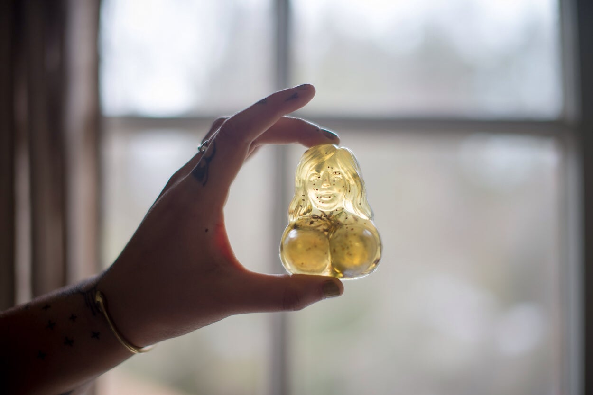

Welcome to raspberry
Home Products Blog Software Community Help Forums Teach Projects Open Search Input Open Navigation
Your complete personal computer, built into a compact keyboard
Find out moreSupport our work
Coronavirus update
Our educational mission has never been more vital. We are supporting teachers, learners and, parents during the lockdown with Learn at home .
Donate Classify your trash with Raspberry Pi Read RFID and NFC tokens with Raspberry Pi | HackSpace 37 Defeat evil with a Raspberry Pi foam-firing spy camera Q&A with NASA engineers behind Raspberry Pi–powered ISS MimicMore from the blog
Learn at home
To help keep young people occupied, entertained, and learning at home, we offer free resources for everyone anywhere in the world.
Join us!Learn and teach through making
Teachers & Educators
Code Club
Code Clubs are free, extracurricular, in-school coding clubs for young people aged 9–13
Teach Computing
A set of resources, lesson plans, and training programmes that help educators teach computing with confidence
Competitions & Events
Coolest Projects
Our whole-day technology showcase celebrating young coders, designers and digital makers around the world
Astro Pi
Our science and coding challenge where young people create experiments that run on the Raspberry Pi computers aboard the International Space Station
Volunteer-led clubs
CoderDojo
CoderDojos are free, creative coding clubs in community spaces for young people aged 7–17
Raspberry Jams
Meetups for people interested in making things with Raspberry Pi computers
Books & magazines
The MagPi issue 99
Discover our guide to the greatest gear from the year
Read it nowHackSpace issue 36
60 tips, tricks and techniques to help your 3D printing journey go as smoothly as possible
Read it nowWireframe issue 43
The developers behind hit ninja-platformer The Messenger return with the epic action RPG, Sea of Stars
Read it now Code the Classics - Volume 1 Build Your Own First-Person Shooter in Unity The official Raspberry Pi Projects Book - Volume 5 Book of Making - Volume 2Find 100s more books and magazines in the Raspberry Pi Press shop
Make something with code
New to Pi? Getting started with the Raspberry Pi Set up your Raspberry Pi and explore what it can do Rock band Make your own musical instruments with code blocks Happy birthday Make an online birthday card on a webpage Visit our projects site for tons of fun, step-by-step project guides with Raspberry Pi HTML/CSS Python Scratch BlenderOur Mission
Our mission is to put the power of computing and digital making into the hands of people all over the world. We do this so that more people are able to harness the power of computing and digital technologies for work, to solve problems that matter to them, and to express themselves creatively.
Donate to support our work
About Us About us Our team Governance Safeguarding Support us Jobs Contact us Support Help Documentation Projects Training Downloads Research FAQ Like Raspberry Pi on Facebook Follow Raspberry Pi on Twitter Join us on Instagram Subscribe to the Raspberry Pi YouTube channel Raspberry Pi Foundation
UK Registered Charity 1129409
Accessibility Privacy Cookies Trademark rules and brand guidelines
